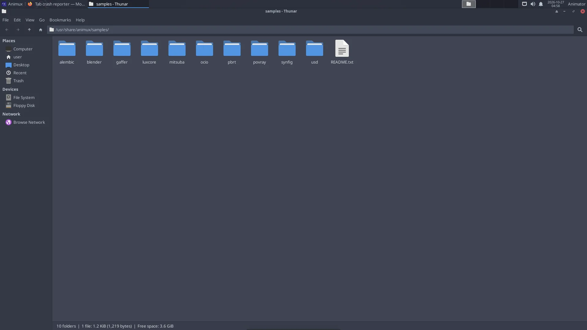

Your Home folder#
Every user has a Home folder (/home/your-login-name, written ~ for short). It is like My Documents on Windows: everything of yours goes here.
| Folder | Use |
|---|---|
Desktop |
files shown on the desktop |
Documents |
scripts, notes, storyboards |
Pictures |
images, textures, renders (POV-Ray GUI saves to Pictures/povray) |
Videos |
finished films |
Music |
soundtracks |
Downloads |
what Firefox downloads |
animux-selftest |
results of the self-test |
The file manager#
Click the grey filing drawer in the dock, or the Home icon on the desktop.


- Left side: places (Home, Desktop, Trash), drives and network.
- Double-click a file to open it; right-click → Open With to choose another program.
- Copy and paste: Ctrl+C, Ctrl+V. Rename: F2. Delete: Delete key (goes to the Trash).
- Show hidden files (their names start with a dot, for example settings folders): Ctrl+H.
- New folder: right-click on empty space → Create Folder.
- Open a terminal here: right-click → Open Terminal Here.
USB sticks and disks#
Plug them in: an icon appears on the desktop and the drive is listed on the left in the file manager. Always eject before unplugging: right-click the drive → Eject (or Safely Remove), and wait until the icon disappears. Otherwise files can be damaged.
Drives formatted for Windows (NTFS, exFAT, FAT32) and Mac (exFAT) work. For drives used only with Linux, ext4 is best; you can format a drive with System → Disks (this erases it).
Network folders#
In the file manager, click Network on the left, or type an address in the location bar (Ctrl+L):
| Kind | Address |
|---|---|
| Windows share / NAS | smb://server-name/share |
| Another Linux computer over SSH | sftp://user@computer/home/user |
| NFS (render farm) | nfs://server/path |
A folder layout for an animation project#
Studios keep every project in the same shape so everybody (and every render node) finds things. A simple version:
~/Projects/my-short/
├── 01-story/ script, storyboard (Scribus, Krita), animatic
├── 02-design/ character and set designs
├── 03-assets/ models, textures, rigs (.blend, .png, .exr)
├── 04-shots/ one .blend per shot: sh010.blend, sh020.blend …
├── 05-renders/ sh010/0001.png … one folder per shot
├── 06-sound/ dialogue, effects, music
└── 07-edit/ Kdenlive project and final MP4
- Use lower-case names without spaces (
sh010-walk.blend, notShot 10 Walk.blend). Command-line tools and render farms like them better. - Use relative paths in Blender (File → External Data → Make Paths Relative) so the project still works when copied to another computer.
Back up#
Copy your project folder to an external drive regularly. On an installed system, Timeshift (Digital Asset Managers → Timeshift) can also snapshot the system before big changes. See System tools.